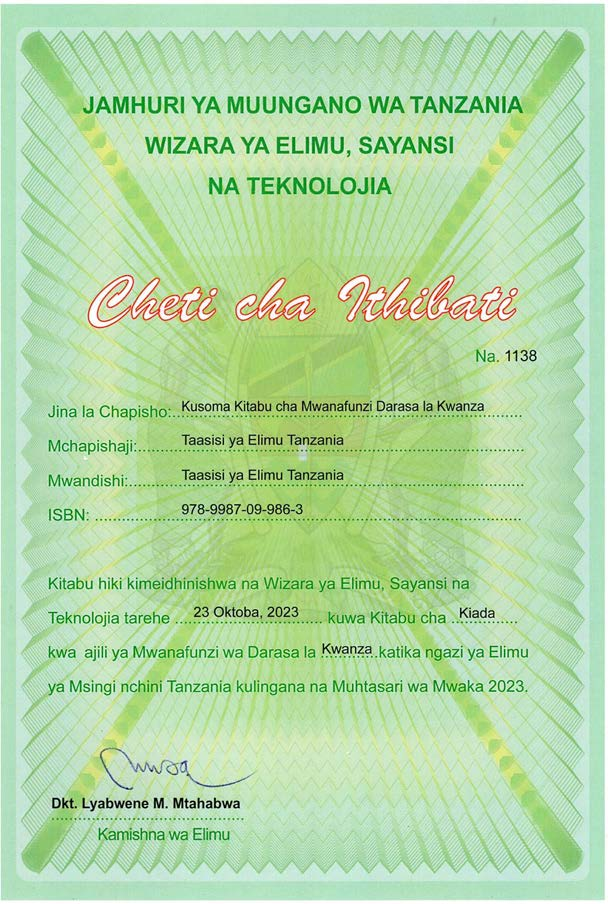

Kusoma
Kitabu cha Mwanafunzi
Darasa la Kwanza

JAMHURI YA MUUNGANO WA TANZANIA
WIZARA YA ELIMU, SAYANSI NA TEKNOLOJIA
Cheti cha Ithibati
Na. 1138
Jina la Chapisho: Kusoma Kitabu cha Mwanafunzi Darasa la Kwanza
Mchapishaji: Taasisi ya Elimu Tanzania
Mwandishi: Taasisi ya Elimu Tanzania
ISBN: 978-9987-09-986-3
Kitabu hiki kimeidhinishwa na Wizara ya Elimu, Sayansi na Teknolojia tarehe 23 Oktoba, 2023 kuwa Kitabu cha . Kiada kwa ajili ya Mwanafunzi wa Darasa la Kwanza katika ngazi ya Elimu ya Msingi nchini Tanzania kulingana na Muhtasari wa Mwaka 2023.
Dkt. Lyabwene M. Mtabwa
Kamishna wa Elimu
Taasisi ya Elimu Tanzania
KUSOMA DRS 1, (18/9/2025) DUMMY FINAL.indd 1
18/09/2025 15:16